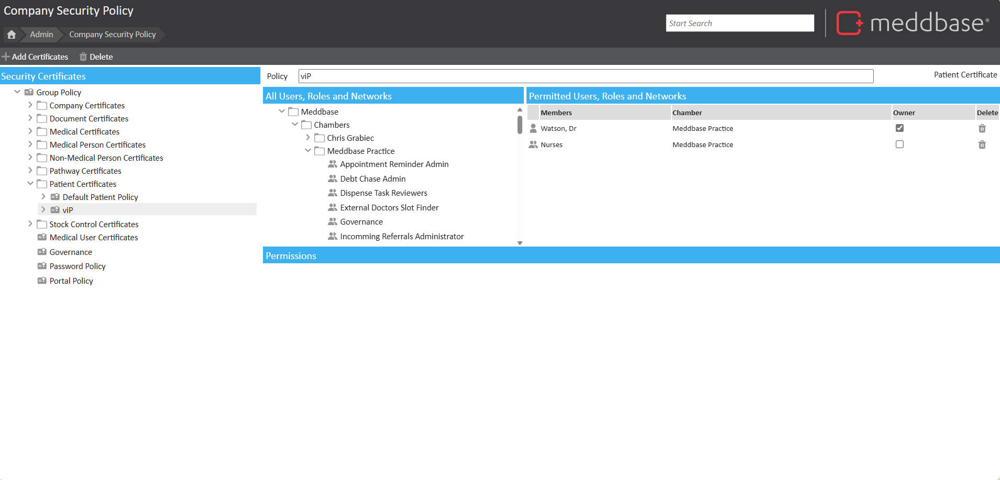
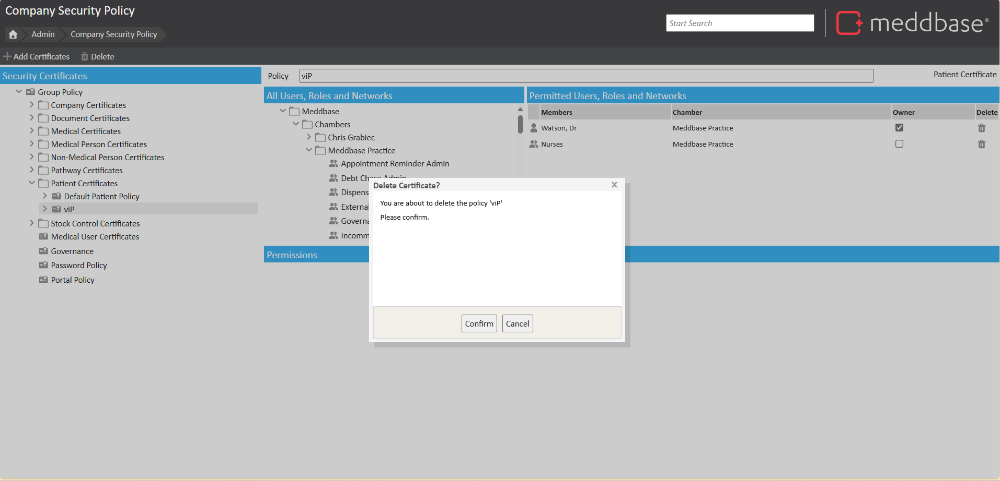

Security Policies govern different aspects of data security in Meddbase. Each policy type (or certificate) governs a set of user permissions.
These permissions determine if or how users will be able to interact with data protected by a given policy or certificate, e.g. Company record protected by a Company Policy; Patient record protected by a Patient Policy.
The purpose of this article is to explain how to delete additional certificates that have been created and may no longer be used.
In order to delete a certificate, go to the ‘Security Policy’ page (Start Page > Admin > Security Policy) and find the certificate you are looking to remove, click on it to bring up the policy details.

With the certificate highlighted, click the ‘Delete’ button on the top bar - you will be prompted to confirm this action. Confirming will proceed with the action.

Please be aware that once a certificate is deleted it cannot be restored and will instead need to be recreated.